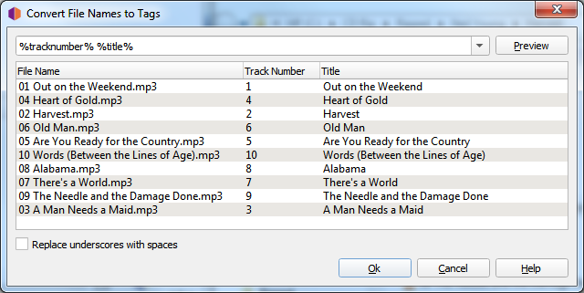

Générer des balises à partir des noms de fichiers¶
Parfois, les fichiers ont des balises de mauvaise qualité ou aucune balise du tout, mais les noms de fichiers sont bien structurés et suivent un modèle. Dans ce cas, vous pouvez utiliser pour générer les balises à partir des noms de fichiers.
Utilisation de base¶
Pour utiliser cet outil, sélectionnez un ou plusieurs fichiers chargés dans Picard et ouvrez la boîte de dialogue Balises à partir de noms de fichiers dans le menu sous . La boîte de dialogue vous montrera une liste de noms de fichiers et un champ de saisie en haut où vous pouvez entrer un modèle correspondant.
{kind=link}
Le modèle de correspondance peut être constitué de noms de balises Picard entourés de signes % et d’autres caractères correspondant textuellement. Pour les noms de balises, vous pouvez utiliser des noms prédéfinis tels que %artist%, %album% ou %title% (voir Balises & Variables) ou utilisez des noms personnalisés. Vous pouvez sélectionner quelques modèles prédéfinis, mais vous pouvez également les ajuster ou définir les vôtres.
Si vos fichiers se composent par exemple d’un numéro de piste et d’un titre de piste séparés par un espace (par exemple 04 Heart of Gold.mp3), vous pouvez utiliser le modèle de correspondance %tracknumber% %title%. Si le numéro de la piste et le titre sont séparés par un trait d’union, comme 04 - Heart of Gold.mp3, le modèle doit également inclure ce séparateur, comme %tracknumber% - %title%.
Cliquez sur le bouton « Aperçu » à côté du modèle correspondant pour afficher un aperçu des balises extraites pour chaque nom de fichier. Une fois que vous êtes satisfait du résultat, vous pouvez accepter les modifications avec le bouton « Ok ». Les balises modifiées seront définies pour les fichiers. Notez que les modifications ne seront pas enregistrées automatiquement, vous devez tout de même enregistrer les fichiers si vous souhaitez que les balises soient écrites (voir Enregistrement des fichiers mis à jour).
Dossiers correspondants¶
Le modèle peut également correspondre aux dossiers parents du fichier. Pour faire correspondre les dossiers, utilisez une barre oblique (/) comme séparateur. Si par exemple le fichier se trouve dans un dossier nommé d’après l’album, qui à son tour se trouve dans un dossier nommé d’après l’artiste (ex Neil Young/Harvest/04 Heart of Gold.mp3), vous pouvez faire correspondre l’artiste, album, numéro de piste et titre avec un modèle de %artist%/%album%/%tracknumber% - %title%.
{kind=link}
Remplacer les traits de soulignement par des espaces¶
Parfois, les fichiers ont été nommés sans espaces et utilisent plutôt des traits de soulignement. Par exemple, un fichier pourrait être nommé 04_Heart_of_Gold.mp3. Par défaut, le titre serait extrait en tant que « Heart_of_Gold ». Dans ce cas, cochez la case « Remplacer les traits de soulignement par des espaces » et utilisez un modèle comme %tracknumber% _%title% pour extraire correctement le titre en « Heart of Gold ».
Ignorer certaines parties du nom de fichier¶
Parfois, vous ne souhaitez pas inclure des parties du nom de fichier dans vos balises et souhaitez simplement les ignorer. Le modèle doit toujours correspondre au nom de fichier entier, cependant. Dans ce cas, vous pouvez utiliser une variable masquée pour les parties du nom de fichier que vous ne souhaitez pas faire correspondre à une balise réelle. Les variables masquées commencent par un trait de soulignement comme %_dummy%. Cette variable sera toujours disponible dans le fichier pour Script, mais ne sera pas écrite dans les balises réelles du fichier lors de l’enregistrement.
Un exemple pourrait être si vous souhaitez extraire uniquement le numéro de piste d’un nom de fichier comme 04 Are You Ready for the Country_.mp3. Peut-être que la balise de numéro de piste est manquante dans le fichier, mais la balise de titre est déjà correctement définie. Vous pouvez utiliser le modèle %tracknumber% %_filetitle%. Cela extraire correctement la balise tracknumber, mais extraire le reste du nom de fichier dans une variable cachée %_filetitle% qui ne sera pas écrite dans les balises de fichier. Le nom %_filetitle% est choisi arbitrairement, il suffit de commencer par un trait de soulignement.
Note
L’analyse des variables cachées à partir des noms de fichiers est prise en charge depuis Picard 2.5. Les versions antérieures créeraient une balise réelle qui serait stockée dans les balises. Si vous utilisez une version Picard antérieure à 2.5, vous devrez supprimer les balises indésirables avant d’enregistrer les fichiers.